A Support Vector Machine is a supervised classifier that tries to separate classes with the widest possible margin. In the simplest case, the model looks for a straight decision boundary that keeps the positive and negative classes apart while leaning most heavily on the closest points, called support vectors. That is why SVMs are often described as linear separators: the core idea is always a linear separating hyperplane in some feature space.
Kernels extend that idea by changing the feature space without forcing us to manually build every higher-dimensional feature. The reason the dot product is so important is that kernels are built around it. Instead of explicitly transforming every point, a kernel computes how similar two points would look after the transformation by using a dot-product-based formula. This is known as the kernel trick.
The three kernel families used here are: linear, where the model uses the original feature space; polynomial, where curved interactions such as squared terms and feature combinations are introduced; and RBF, where local neighborhoods matter more and the decision boundary can become much more flexible. The polynomial and RBF kernels are especially useful when the classes are not separated well by one straight boundary in the original data.
Worked casting example with a polynomial kernel:
start with a 2D point x = (x1, x2) = (2, 3), use r = 1 and
d = 2, and the point is implicitly cast into six dimensions:
[x1^2, sqrt(2)x1x2, x2^2, sqrt(2)x1, sqrt(2)x2, 1].
Substituting (2, 3) gives approximately
[4, 8.49, 9, 2.83, 4.24, 1]. The SVM does not need that vector written out every time,
because the polynomial kernel computes the effect through the dot product.
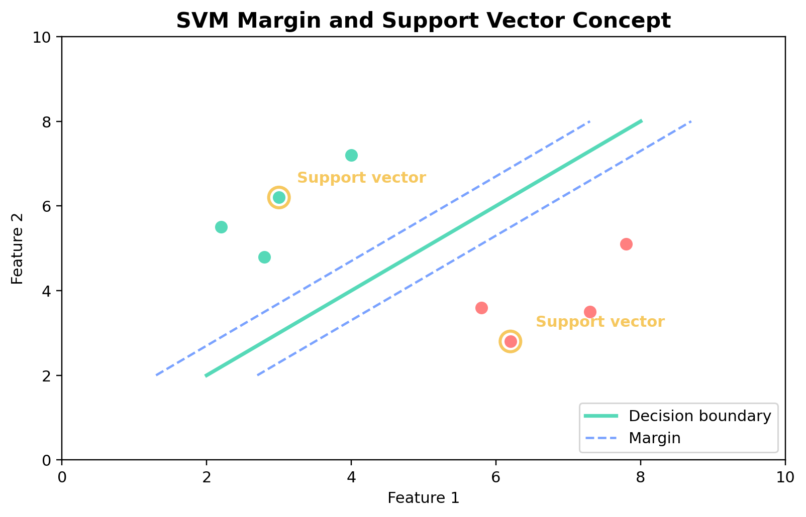
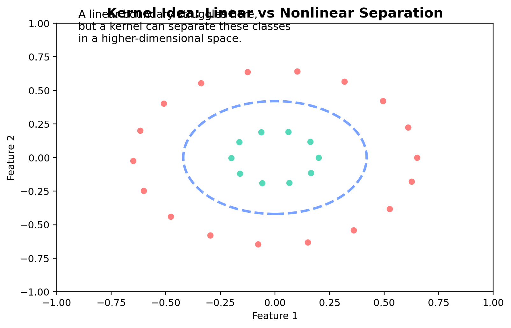
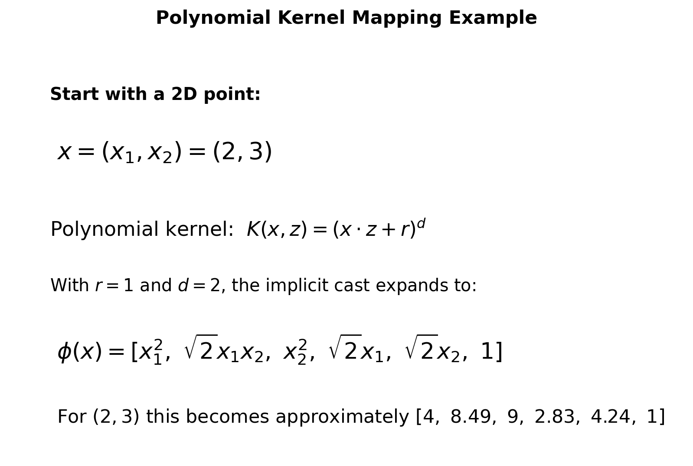
r = 1 and d = 2.
SVM classification is a supervised method, so it can only be used when the data has labels. For this
project, the main label is label_popular_top25, where 1 means the movie is in the top 25%
of popularity and 0 means it is not. After duplicate movie IDs were removed, the modeling dataset
contained 191 unique movies.
SVMs also require numeric input. That matters because the model compares examples by distance, geometry, and dot-product calculations. Text labels such as genres cannot be used directly, so genres were converted into numeric indicator columns, and the numeric movie features were prepared into one combined feature matrix with 27 numeric columns.
The same stratified split strategy from Module 3 was reused here: 143 training rows and 48 testing rows. The training and testing sets must stay disjoint so the model is evaluated on unseen movies. The split summary reports 0 overlapping movie IDs, which helps prevent leakage and keeps the accuracy results honest.
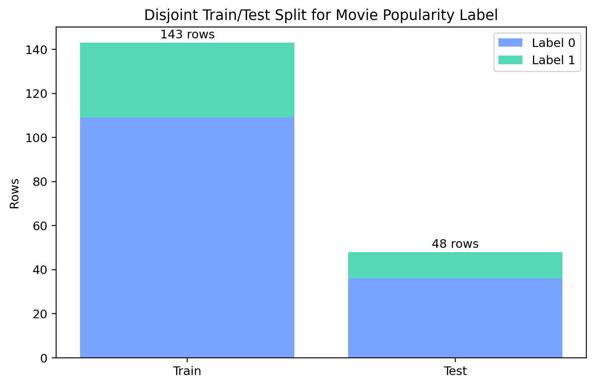
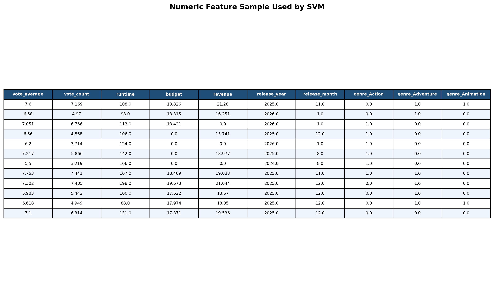
The full SVM workflow was written in Python in the Module 4 pipeline. The script builds the numeric dataset, runs the kernel and cost experiments, saves the confusion matrices, and exports the visualization assets used on this page.
I tested three kernels, each across multiple cost values, and then kept the best cost for each kernel. The best overall SVM was the RBF kernel with C = 1, which reached 0.7500 accuracy. Both the linear kernel with C = 0.1 and the polynomial kernel with C = 1 finished at 0.7083 accuracy.
That result suggests the movie-success boundary is not perfectly straight in the original feature space. The RBF kernel handled the separation better because it can respond to local nonlinear structure, while the linear and polynomial settings left more overlap between top-popularity movies and the rest of the sample.
| Kernel | Chosen C | Accuracy | Confusion matrix values |
|---|---|---|---|
| Linear | 0.1 | 0.7083 | TN=24, FP=12, FN=2, TP=10 |
| Polynomial | 1 | 0.7083 | TN=26, FP=10, FN=4, TP=8 |
| RBF | 1 | 0.7500 | TN=27, FP=9, FN=3, TP=9 |
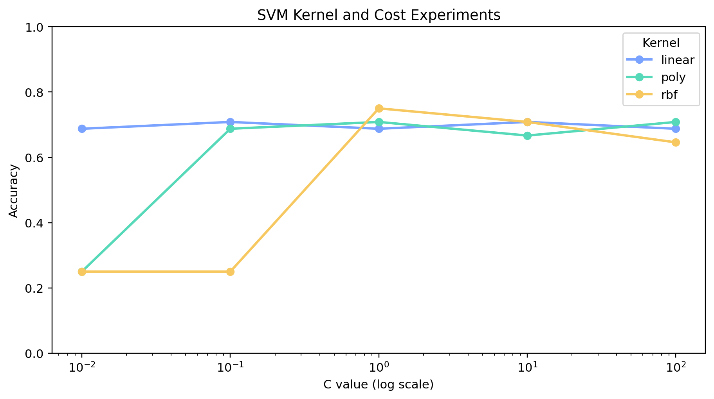
C = 1 produced the best
held-out accuracy.
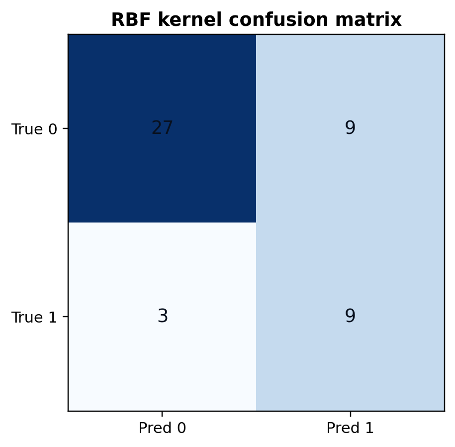
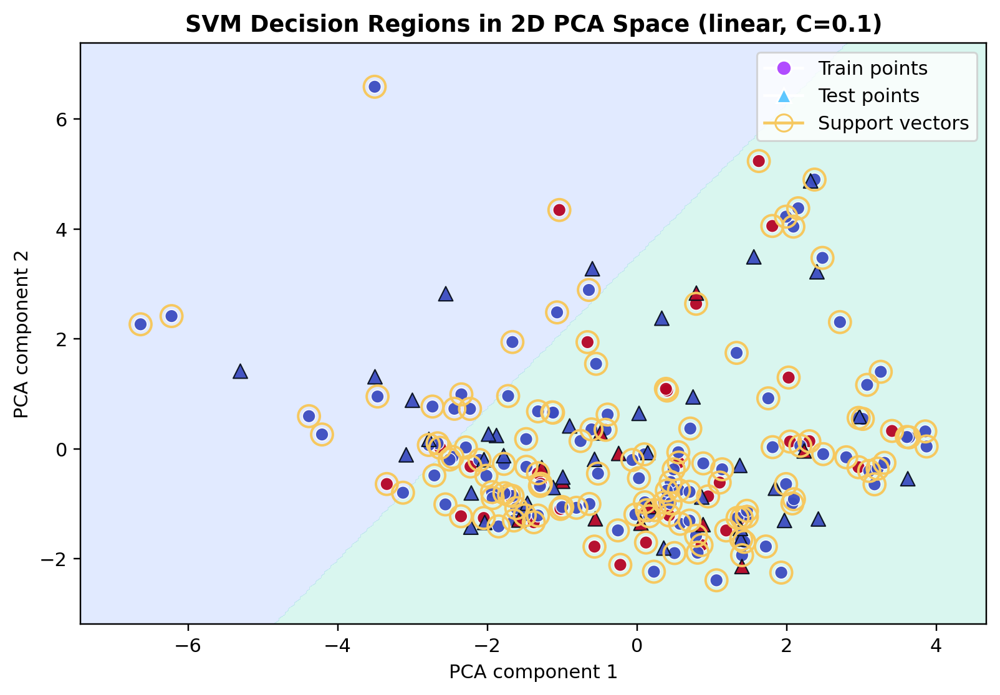
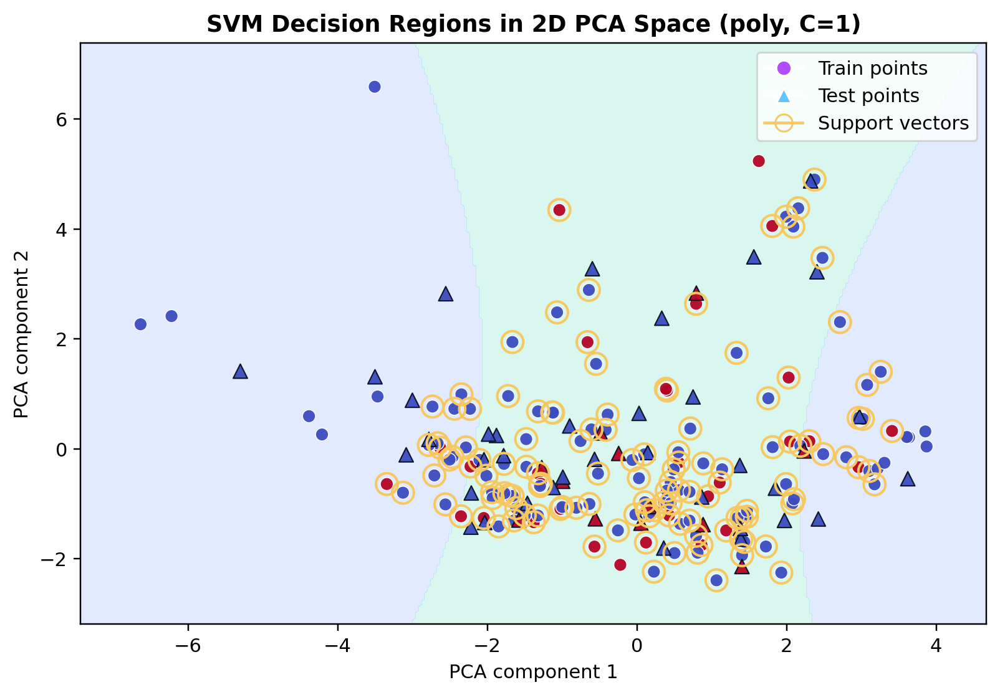
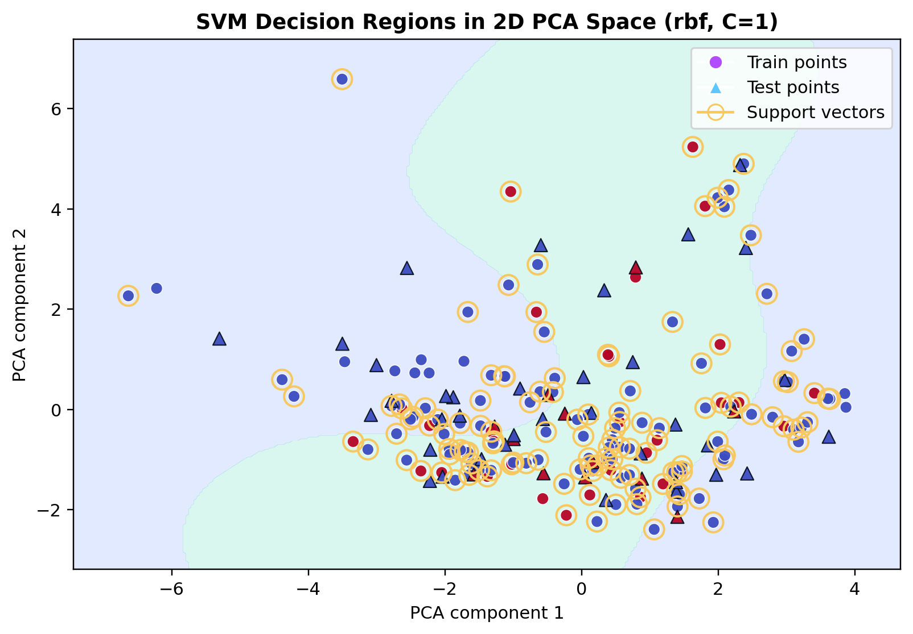
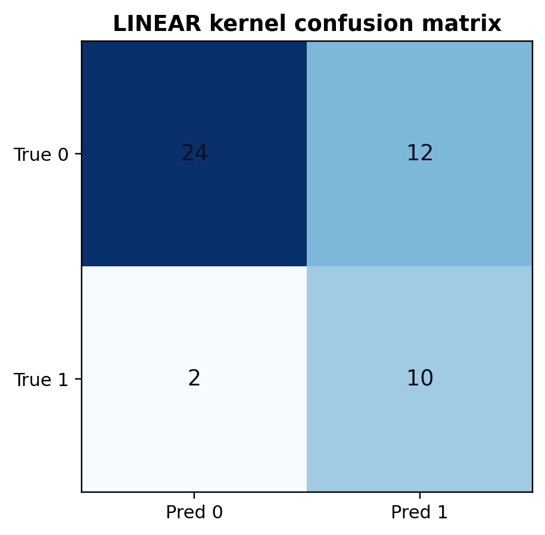
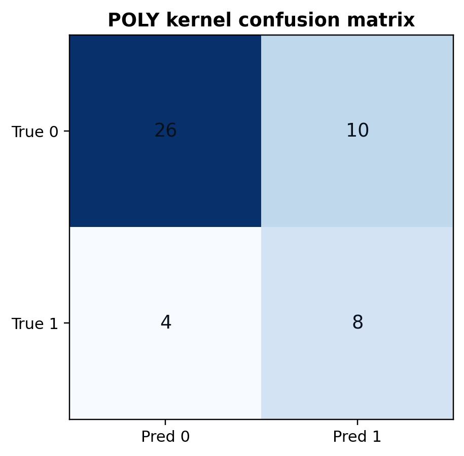
The SVM results suggest that movie visibility in this dataset is not separated best by one simple straight rule. The RBF kernel performed best, which points to a more curved or locally structured boundary between top-popularity movies and the rest. In topic terms, that means movie visibility seems to depend on a mix of timing, scale, and genre signals that interact in ways a purely linear separator does not fully capture.